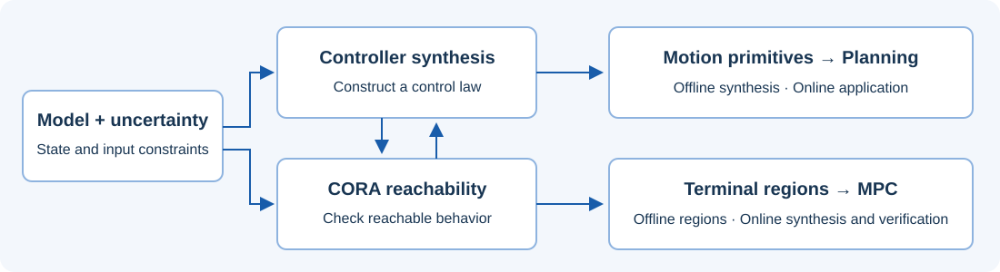

AROC is a MATLAB toolbox for controller synthesis, motion planning, and model predictive control under bounded uncertainty. It uses CORA reachability analysis to check state and input constraints under the specified model assumptions.
From a model to a verified controller

Workflow schematic. Verification is conditional on the system model, uncertainty bounds, and algorithm assumptions.
1 · ModelDynamics and bounded uncertainty
2 · SynthesizeA controller or motion primitive
3 · VerifyCORA reachable-set analysis
4 · ExecutePlanning or feedback control
What can you do with AROC?
Motion Primitive Based Control
Synthesize controllers for individual motion primitives offline, then combine them for online planning. AROC provides six control methods and uses reachable sets to check state and input constraints under bounded uncertainty.
Construct and verify control laws online to steer a system into a terminal region. AROC provides reachset MPC for nonlinear systems and a dedicated method for linear systems, accounting for the time allocated to computation and verification.
Nonlinear MPC: artificial system · recorded result
Motion Planning
Connect precomputed motion primitives with a maneuver automaton to plan dynamically feasible motions. CommonRoad and CommonOcean interfaces support road and marine scenarios; occupancy sets represent the uncertainty used in collision checking.
Traffic planning with a maneuver automaton · recorded result
Safe Terminal Regions
Compute regions from which a controller can keep the system within its constraints and stabilize it around an equilibrium under the specified model and uncertainty assumptions. The 2026 release supports zonotopic and ellipsoidal regions for linear systems, as well as optimization-based methods for nonlinear systems.
Linear terminal region: fixed zonotope · recorded result
Conformant Synthesis
Use measurements to identify uncertainty bounds for an over-approximative system model. Conformant synthesis helps connect model-based controller verification to measured system behavior. Guarantees remain conditional on the model class, uncertainty assumptions, and applicability of the identified bounds.
Optimize a reference trajectory and a feedback controller, then use reachability analysis to verify the resulting motion primitive for the specified initial set and disturbances.
Construct control inputs at the vertices of an enclosing parallelotope and interpolate between them during execution. Inputs are updated at the sampling instants and held constant between updates.
Parameterize the control law in the generator space of a zonotope. This avoids enumerating all parallelotope vertices; the number of generator-related optimization problems grows linearly with state dimension in the construction described in the manual. This is not a claim about total runtime scaling.
Extend generator space control with polynomial control laws. Dependency-preserving reachability analysis with polynomial zonotopes relates control parameters to reachable states and supports the selection of parameters that reduce the final reachable set.
Combine optimization-based feedback with generator space feedforward control. Initial-state-dependent reference trajectories improve disturbance rejection while reachable-set verification checks the resulting controller against the constraints.
Check a comfort controller using reachability analysis at each sampling step. Apply it when constraints and the safety-envelope condition are satisfied; otherwise switch to the precomputed safety controller. Safety depends on the specified dynamics, uncertainty bounds, and verification conditions.
The release was prepared with MATLAB R2025b, CORA v2026.0.1, YALMIP R20250626, CasADi 3.7.2, and MOSEK 11.1. These are the release preparation versions, not a claim that older MATLAB versions cannot work. See Manual §1.2 for installation requirements and solver alternatives.
Install CORA 2026, YALMIP, CasADi, and the solver required by your algorithm. MOSEK or Gurobi is recommended; some algorithms also support MATLAB solvers.
Add the toolbox directories to the MATLAB path and run the dependency report.
Configure the solver separately using its installation instructions. Then run a benchmark from examples/. The dependency report checks availability; it does not certify that every algorithm works. Use runUnitTests for the toolbox tests described in Manual §1.6.
Animations play and loop automatically when in view. Choose a method to watch its saved output, or use the controls to inspect a moment. Every animation links to the executed MATLAB example and its checks.
Three additional demonstrations document specific configurations, separate from the 18-example animation record above. Expand each card for its parameters and validation limits.
Initial state [3, −3], prediction horizon 8 s, 40 steps. The input-constraint and final-terminal-set checks pass. The terminal polytope is taken from the upstream unit test. Real-time deadlines were disabled; this is not a real-time performance benchmark.
Fixed zonotopic construction, 10 steps of 0.1 s, 10 generators. State limits: |x₁| ≤ 10, |x₂| ≤ 4; input limit: |u| ≤ 1; disturbances: |wᵢ| ≤ 0.1. Ten sampled extreme-disturbance trajectories are checked against state and input limits and the final target set. Sampling is not an independent proof for all disturbances.
Uncertainty bounds fitted using the three supplied platoon measurement trajectories (group size 6, measurement errors enabled, μ = 0.1). Full-state containment passes at 101/101 matching time stamps on the first supplied trajectory. This is a check on fitting data, not a held-out validation or a guarantee for arbitrary real-world behavior.
AROC is developed by Niklas Kochdumper, Felix Gruber, Bastian Schürmann, Victor Gaßmann, Moritz Klischat, Lukas Schäfer, Adrian Kulmburg, Yongkuan Zhang, and Matthias Althoff, as credited in the 2026 manual.